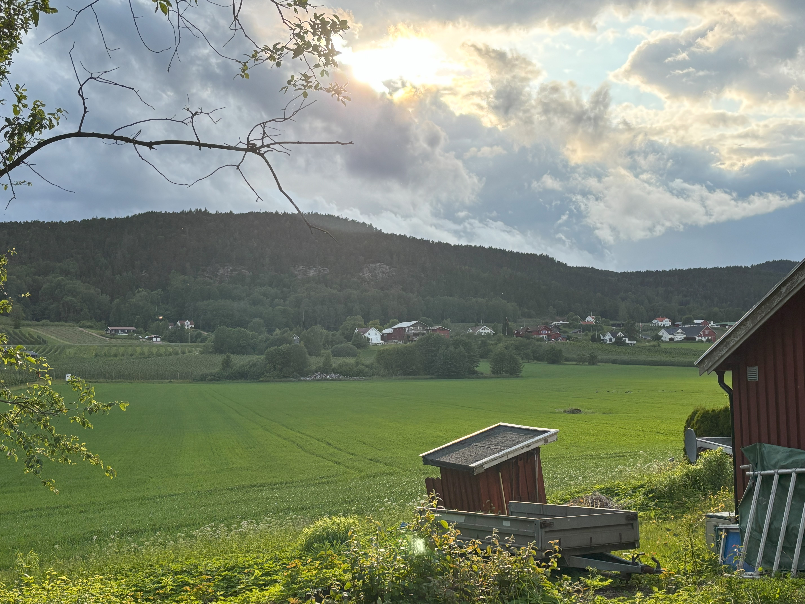

Life Gallery


Solutions Engineer | CRM Strategist | Future Cloud Architect
Solutions-driven professional with a hybrid background in technical implementation, client-facing engineering, and operational leadership. Experienced in configuring enterprise platforms, optimizing workflows, and leading cross-functional projects. Passionate about aligning technology with business outcomes and currently pivoting toward a long-term career in cloud technology.
AWS Certified Solutions Architect – Associate (Issued August 2025) – View Credential
Custom framework for streamlining small-business CRM deployments using automation and documentation templates.
Currently building lab environments and reference architectures while studying for AWS & DevOps certifications.
Download my full resume here (PDF).
Email: edgarsalinas0903@gmail.com
Phone: (815) 981-2488

Transformed a backyard from bare dirt to a green retreat with retaining walls and a rock garden.

Full front yard redesign with mulch, bushes, and edging work for a clean, modern look.